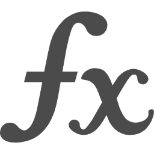

| 220901 | 概収束と確率収束：[#80]に補足を追加 |
| 系と列，集合系：[#345]と[#346]を追加 | |
| σ加法族：[#90]を修正し補足を追加／[#91]を微修正 | |
| 220821 | ２次形式：ページ作成／[#344]を追加 |
| 正則行列と逆行列：[#271]を微修正／[#343]を追加 | |
| Peanoの公理と自然数：「自然数」から名称変更／[#341]と[#342]を追加 | |
| 220820 | 順序組と直積：[#297]を微修正 |
| 220819 | 順序組と直積：「直積」から名称変更／[#339]と[#340]を追加 |
| 220815 | トップページ：「集合と写像」の章から 「数論と集合・写像」の章を作成分離 |
| 集合の濃度：[#329]を微修正 | |
| 自然数：ページ作成／[#338]を追加 | |
| 220809 | 関係：ページ作成／[#334]〜[#337]を追加 |
| 系と列，集合系：「系と族，集合族」からページ名変更／ [#223]を大幅修正，付随して全体を微修正／ [#333]を追加 | |
| 220807 | 集合の濃度：[#329]に情報追加／[#330]〜[#332]を追加 |
| 220806 | 集合の濃度：ページ作成／[#328]と[#329]を追加 |
| 220805 | 命題論理：[#60]に情報追加 |
| σ加法族：[#327]を追加 | |
| 差集合：[#85]をペースト／[#326]を追加／ [#55]，[#96]〜[#97]，[#211]〜[#212]に別証明追加 | |
| 補集合：[#85]をカット | |
| 空集合と普遍集合：「普遍集合」からページ名称変更／ [#49]と[#110]をペースト／[#324]と[#325]を追加／ [#49]，[#83]，[#213]〜[#215]を大幅更新 | |
| 集合：[#49]と[#110]をカット | |
| 220718 | Poisson 分布：[#321]，[#322]に証明追加 |
| 220717 | Poisson 分布：ページ作成／[#319]〜[#323]を追加 |
| 二項分布：[#314]を修正／[#316]，[#317]に証明追加／[#318]を追加 | |
| Bernoulli 分布：[#310]，[#313]を微修正 | |
| 220716 | 二項分布：ページ作成／[#314]〜[#317]を追加 |
| Bernoulli 分布：[#310]に情報追加／[#313]を追加 | |
| 220715 | Bernoulli 分布：ページ作成／[#310]〜[#312]を追加 |
| 直積：[#309]を追加 | |
| 220714 | 射影行列：[#308]を追加 |
| 220713 | 直積：[#297]に情報追加 |
| 行列の対角化：[#301]を微修正 | |
| 写像：[#99]に情報追加 | |
| 220712 | 正規行列：[#307]に情報追加 |
| 220711 | 正規行列：[#269]と[#270]を修正／[#306]〜[#307]を追加 |
| 行列の対角化：[#298]を修正／[#303]〜[#305]を追加 | |
| 220710 | 行列の対角化：ページ作成／[#298]〜[#302]を追加 |
| 220709 | 直積：ページ作成／[#297]を追加 |
| 220707 | 射影行列：[#275]と[#276]を修正 |
| 行列：[#144]に情報追加／[#185]に情報追加，証明追加／[#187]を修正 | |
| 220706 | 行列：[#180]に補足を追加／[#296]に解答を追加 |
| 220705 | 行列：[#296]を追加 |
| 固有値と固有ベクトル：[#284]を修正，証明を追加 | |
| 行列式：ページ作成／[#289]〜[#295]を追加 | |
| 220703 | 行列：[#144]，[#179]，[#185]を微修正 |
| 対角行列：ページ作成／[#286]〜[#288]を追加 | |
| 220628 | 固有値と固有ベクトル：[#284]と[#285]を追加 |
| 述語論理：[#122]と[#139]を微修正／[#283]を追加 | |
| 220624 | 漸近記法：全体的に修正／[#280]〜[#282]を追加 |
| 220623 | 漸近記法：[#279]の補足を微修正 |
| 220621 | 漸近記法：[#174]に補足を追加／[#279]を追加 |
| 220618 | 射影行列：[#275]を微修正／[#276]と[#277]に証明を追加 |
| 固有値と固有ベクトル：[#278]を追加 | |
| 220617 | 射影行列：[#276]と[#277]を微修正 |
| 220615 | 射影行列：ページ作成／[#275]〜[#277]を追加 |
| 含意：[#65]の補足を微修正，[#274]を追加 | |
| 命題論理：[#237]を微修正 | |
| 推論：ページ作成／[#272]と[#273]を追加 | |
| 220613 | 正則行列と逆行列：[#271]を追加 |
| 220612 | 正規行列：ページ作成／[#269]と[#270]を追加 |
| Hermite 行列と対称行列：[#268]を追加 | |
| 220611 | 行列：[#180]と[#185]に補足を追加 |
| 正則行列と逆行列：[#163]に補足を追加 | |
| 複素共役と随伴行列：[#256]を微修正 | |
| 「演習問題集」からページの名称とURLを変更．順次反映 | |
| 220608 | トップページ：フレーム関連のリニューアル |
| 220607 | ユニタリ行列と直交行列：[#267]を追加 |
| 220606 | ユニタリ行列と直交行列：[#262]と[#263]を微修正 |
| 複素共役行列と随伴行列：[#265]と[#266]を追加 | |
| 220605 | 転置行列：[#264]を追加 |
| ユニタリ行列と直交行列：ページ作成／[#260]〜[#263]を追加 | |
| Hermite 行列と対称行列：[#259]を追加 | |
| 220604 | Hermite 行列と対称行列：ページ作成／[#258]を追加 |
| 複素共役行列と随伴行列：[#254]と[#256]に補足を追加 | |
| 220602 | 複素共役行列と随伴行列：[#256]に補足を追加／[#257]を追加 |
| 220601 | 複素共役行列と随伴行列：ページ作成／[#254]〜[#256]を追加 |
| 220529 | 転置行列：ページ作成／[#249]〜[#253]を追加 |
| 行列：[#144]，[#145]，[#178]，[#180]，[#184]を微修正 | |
| 220527 | 測度：[#16]をペーストし，大幅修正 |
| 確率測度：[#16]をカット | |
| Borel 集合：[#248]を追加 | |
| 220524 | Borel 集合：[#246]と[#247]を追加 |
| 220523 | σ加法族：[#91]の証明を追加 |
| 述語論理：[#243]と[#244]を微修正 | |
| 含意：[#245]を追加 | |
| 220522 | 集合：[#243]と[#244]を追加 |
| 命題論理：[#237]を微修正 | |
| 述語論理：[#139]と[#141]を微修正／[#122]と[#140]を大幅修正 [#240]〜[#242]を追加 | |
| 220521 | 含意：[#238]と[#239]を追加 |
| 命題論理：[#63]に補足を追加／[#64]を微修正／[#237]を追加 | |
| 系と族，集合族：「系と族」から名称変更／ [#119]，[#130]〜[#132]，[#196]〜[#197]をペースト | |
| 互いに素な集合と直和：[#196]と[#197]をカット | |
| 集合の像と逆像：[#119]をカット | |
| 補集合：[#132]をカット | |
| 集合：[#194]を更新／[#130]と[#131]をカット | |
| 220520 | 量子ウォークの Fourier 変換：ページ作成／[#235]と[#236]を追加 |
| σ加法族：[#234]を追加／[#14]，[#32]〜[#34]を微修正 | |
| 220519 | 「トップページ」と「更新履歴」にも新レイアウトを導入 |
| 集合の像と逆像：ページのレイアウトを更新（最新版１号; 順次導入） | |
| 220518 | 条件付き確率：[#207]の解答を追加 |
| 可測関数：[#29]を修正／[#233]を追加 | |
| 互いに素な集合と直和：ページのレイアウトを更新／[#197]を更新 | |
| Borel 集合：ページのレイアウトを更新／[#148]を修正 | |
| 220517 | 可測関数：ページのレイアウトを更新／[#29]を修正 |
| Lebesgue 積分：[#44]を修正 | |
| トップページ：「Lebesgue 積分論」を「測度論」と統合 | |
| 220515 | 概収束と確率収束：[#78]を微修正 |
| 220514 | 平均収束：「期待値に関する収束」から名称変更／ [#79]，[#220]，[#221]を微修正 |
| 概収束と確率収束：[#78]，[#80]，[#219]を微修正 | |
| 確率測度：[#231]，[#232]を微修正 | |
| 補集合：[#84]に補足を追加 | |
| 零集合と完備測度空間：[#230]を微修正 | |
| 220513 | 確率測度：[#231]と[#232]を追加／[#12]，[#13]，[#15]を微修正 |
| 零集合と完備測度空間：ページ作成／[#228]〜[#230]を追加 | |
| 220511 | 期待値と分散：[#154]と[#155]をペースト |
| 期待値に関する収束：ページ作成／[#79]，[#220]，[#221]をペースト | |
| 概収束と確率収束：ページ作成／[#78]，[#80]，[#219]をペースト | |
| 確率変数の弱収束：「確率変数の収束」から名称を変更／ [#78]〜[#80]，[#154]〜[#155]，[#219]〜[#221]をカット | |
| 220510 | 確率測度：[#227]を追加／[#12]を修正 |
| 測度：[#226]と参考文献を追加／[#28]を微修正 | |
| 期待値と分散：[#224]，[#225]と参考文献を追加 | |
| 220509 | 系と族：ページ作成／[#223]を追加 |
| 正規分布：[#153]をペースト | |
| 確率変数の収束：[#79]を修正／[#219]〜[#222]を追加／[#153]をカット | |
| 220508 | 集合：[#110]と[#111]を微修正 |
| 普遍集合：ページ作成／[#83]，[#213]〜[#216]をペースト [#213]の証明を更新 | |
| 補集合：「普遍集合と補集合」からページ名変更／ [#83]，[#213]〜[#216]をカット／[#84]を定義に変更／ [#85]と[#86]の証明を微修正／[#218]を追加 | |
| 確率変数の収束：[#151]と[#153]，参考文献一部をペースト | |
| 特性関数：[#151]と[#153]，参考文献一部をカット | |
| 220507 | 条件付き確率：[#217]を追加 |
| 普遍集合と補集合：[#83]と[#132]を微修正／[#215]と[#216]を追加 [#84]の補足追加と証明更新／ | |
| 220506 | アイコンを導入．逐次追加 |
| 差集合：ページ作成／[#55],[#95]〜[#97],[#211]〜[#212]をペースト | |
| 普遍集合と補集合：「差集合と補集合」からページ名変更／ [#55],[#95]〜[#97],[#211]〜[#212]をカット／ [#213]と[#214]を追加／[#83]と[#84]を微修正 | |
| 220504 | 差集合と補集合：参考文献を一部表記変更／[#212]を微修正 |
| 互いに素な集合と直和：参考文献を一部表記変更 | |
| 集合：参考文献を一部表記変更 | |
| 220503 | 差集合と補集合：[#211]と[#212]を追加 |
| トップページ：「確率論」の項の一部を「確率過程」に分離 | |
| 事象の独立性：ページを作成／[#209]と[#210]を追加 | |
| 条件付き確率：[#208]を追加 | |
| 220502 | 条件付き確率：[#202]と[#203]の証明，補足を追加／[#207]を追加／ 参考文献・コンテンツを追加 |
| 測度：[#205]と[#206]を追加／[#25]を微修正／ [#26]と[#46]に別証明を追加 | |
| 集合：[#56]と[#57]を大幅修正／参考文献を追加／[#204]を追加 | |
| 分布関数：[#170]の証明と補足を追加 | |
| 220501 | 条件付き確率：ページ作成／[#201]〜[#203]を追加 |
| 期待値と分散：ページ作成／[#198]〜[#200]を追加 | |
| 集合：[#51]と[#111]を微修正／参考文献を追加／ 埋め込みのレイアウトを修正／ | |
| トップページ：「集合」と「写像」の項目を「集合と写像」として統合 | |
| 220430 | 集合：[#130]のレイアウトを更新／参考文献を追加 |
| 互いに素な集合と直和：[#195]と[#196]を微修正／参考文献を追加 | |
| 差集合と補集合：[#55]を更新 | |
| 220429 | 差集合と補集合：ページのレイアウトを更新／[#55]の主張を詳細化 |
| 測度：[#24]と[#25]を更新 | |
| 互いに素な集合と直和：ページ作成／[#195]〜[#197]を追加 | |
| 集合：ページのレイアウトを更新／[#194]を追加／[#130]を更新／ [#131]に補足を追加／参考文献・コンテンツを追加 | |
| 分布関数：[#193]を追加 | |
| 220428 | 集合列と極限：[#191]を更新／[#192]の証明を追加 |
| 220426 | 測度：[#27]，[#28]を更新 |
| 集合列と極限：ページ作成／[#189]〜[#192]を追加 | |
| 220423 | 数列の収束：ページのレイアウトを更新／[#8]を更新／[#188]を追加 |
| 漸近記法：[#174]を更新／参考文献を更新 | |
| 正則行列と逆行列：[#167]に「例」を追加 | |
| 行列：[#144]を更新／[#184]〜[#187]を追加 | |
| 220422 | 固有値と固有ベクトル：[#183]を追加／参考文献を更新 |
| 220418 | 確率測度：ページのレイアウトを更新／[#16]を微修正 |
| 正規分布：[#181]，[#182]を追加 | |
| 220412 | 行列：[#144]，[#179]，[#180]を微修正 |
| 220411 | 行列：[#144]，[#145]の内容を更新／[#178]〜[#180]を追加 |
| 220410 | 「更新履歴」のページをリフォーマット |
| 220409 | 分布関数：[#177]を追加 |
| 正規分布：[#152]の内容と証明を更新／[#175]，[#176]を追加 | |
| 220408 | 漸近記法：ページ作成／[#174]を追加 |
| 220406 | 確率変数：ページのレイアウトを更新／[#173]を追加 |
| 分布関数：[#172]を追加 | |
| 220405 | 分布関数：[#20]の証明を追加／付随して内容を微調整 |
| 220404 | 分布関数：[#18]の内容と証明を更新／[#170]，[#171]を追加 |
| 「更新履歴」のページを作成 |